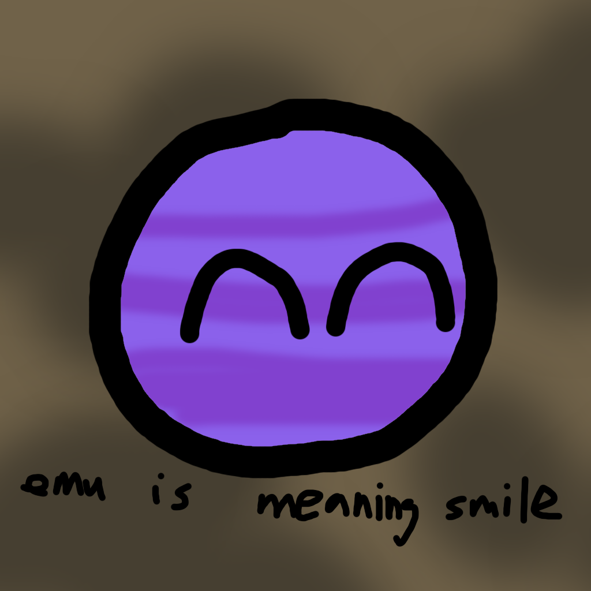

- Jane "Shitty" Anderson The Shitty 2763th
(context unavailable because there was never any context to begin with 🐎🐎🐎🐎🐎)
hi im lan lan man from the Anti-Lanzoor Organization and i have successfully acquired this website through a completely legal and definitely not made-up series of events
The name of this motherfucker fucking sucks. Henceforth mentioned as Lanzoor or
Shitzoor.
he pretends to be the nicest person to exist on the earth

"profile picture" of shitzoor (bro this OC sucks)
they claim to be Lanzoor
unfortunately our evidence says it's true
we attempted to disprove this claim but like
we were unsuccessful because the claim was literally true.
FUCK
emu is meaning smile
pretty ironic, right
The Shitzoor Effect is a phenomenon first discovered approximately 27.63 minutes ago and states that anyone named Lanzoor is shitty. This theory has not been peer-reviewed because we forgot to ask anyone.
Refer to this formula:
S = L² + 3h - 🐎/2
where
S = shittiness
L = numero of lanzoors present
h = numero of times someone said "h"
sorry we couldn't afford LaTeX so just have budget LaTeX
Note: The equation does not actually mean anything.
we asked 2763 scientists
2762 blocked us
the 1st said "who?"
...yeah the effect on the society is pretty bad
Here is a visual example of the Shitzoor Effect in place.
⚠ The example below is completely NOT made-up. Any similarity to real messages or conversations is
purely intentional.
⚠ This example IS intended to blame Lanzoor in every way possible.
h
What do you think is the most important factor that makes a person not shitty? Is it the personality,
or the personality? While all of these are certainly important, we believe that the
name is one of the most important factors in shaping how shitty a person truly
feels.
like bro what kind of name is "lanzoor"
we tried everything in the Anti-Lanzoor Organization including
rm -rf lanzoor
nothing worked womp womp
Here are some unedited quotes from some of our employees that you may find interesting 🐎

- Discord user thenumberoneshitzoorhater
After reviewing all three pieces of evidence, consulting zero experts, and spending approximately 27.63
yoctoseconds on
this investigation, the Anti-Lanzoor Organization can confidently conclude that:
Lanzoor exists.
Unfortunately.
dang it
If you've read all the way through, (even if you skipped to the bottom)
fuck Shitzoor.
Not everyone takes the time to fuck Shitzoor, and the fact that you did already sets you
apart.
Stay s st zdf f Fuck Shitzoor! 👋